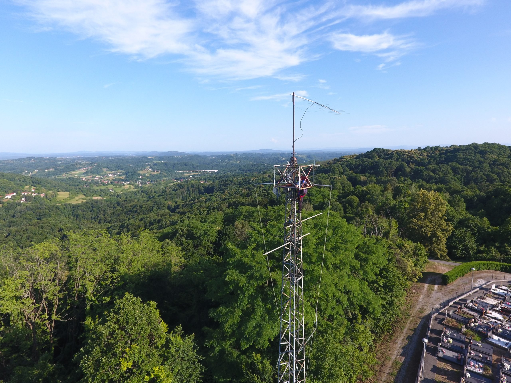
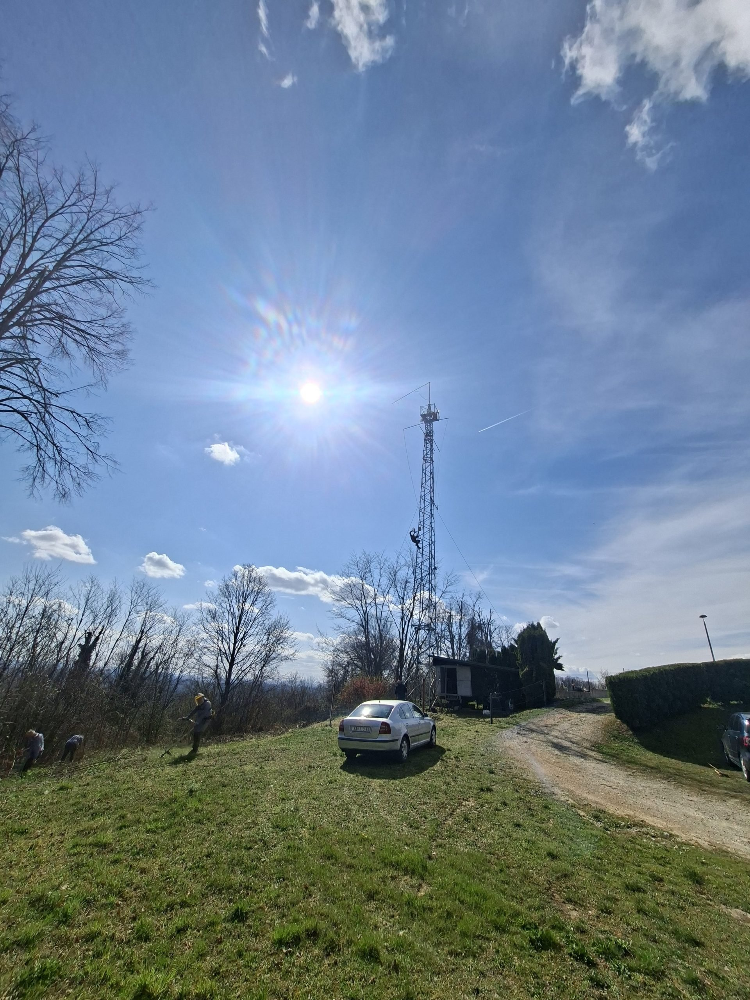
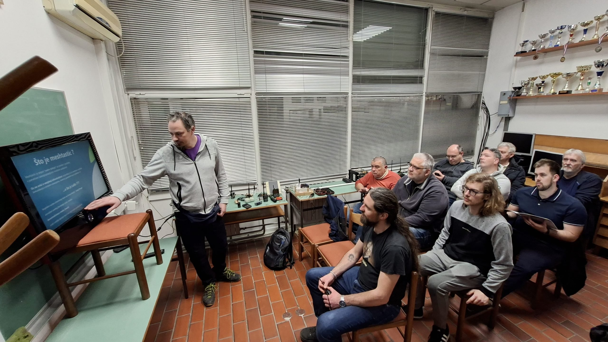
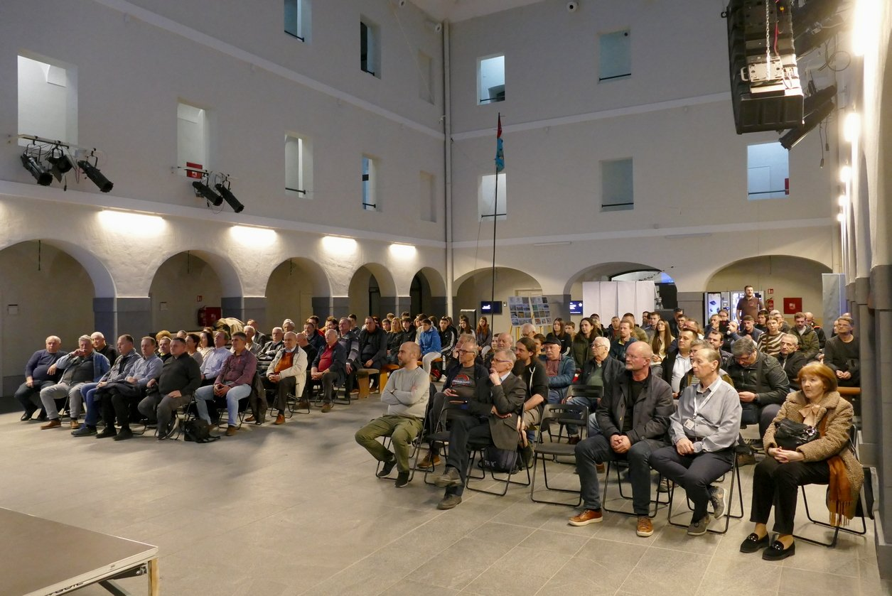
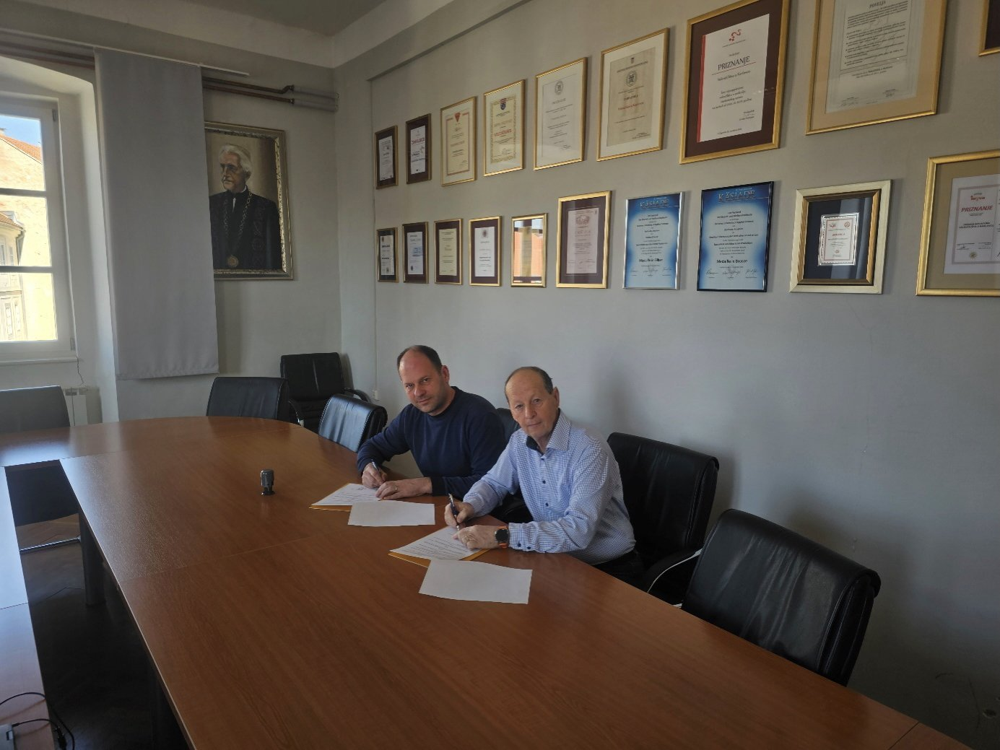

Zamjena Meshtastic Rutera na sv. križu
Danas je uspješno obavljena zamjena Meshtastic routera postavljenog na radioamaterskom tornju na Sv. Križu. Zahvat je uključivao uspon na toranj, demontažu postojeće opreme te...
Novosti
Objave prenesene s javno dostupnog izvora radioklub-karlovac.hr.

Danas je uspješno obavljena zamjena Meshtastic routera postavljenog na radioamaterskom tornju na Sv. Križu. Zahvat je uključivao uspon na toranj, demontažu postojeće opreme te...

Radio klub Karlovac ponovno je organizirao malu radnu akciju na lokaciji Sv. Križ kod radioamaterskog tornja. Vrijedni članovi okupili su se kako bi uredili okoliš – pokosili...

2. CroMesh meetup održan je 28.02.2026. godine u prostorijama Radio kluba Karlovac (9A1CVW). Predavanje je otvorio predsjednik kluba Ladislav Medunić. Program je zatim nastavio...

Radioamateri Radiokluba Karlovac su prisustovali CroMesh.eu skupu. Bilo je razgovora o Meshtasticu i kako funkcionira. Članovi male zajednice su izložili svoje uređaje i projekte....

Uvrstila se i naša Mrežnica u Floru i Faunu! Sužbeno od 25.05.2025 pod oznakom 9AFF-0141. Više na http://9aff.9a1wff.eu/ProtectedAreas

S velikim zadovoljstvom objavljujemo uspješno održano predavanje o Cro Cube satelitu! Velika hvala svima koji ste bili dio ovog događaja, posebice predavaču Željku Ulipu, čija je...

Radioklub je nedavno iskoristio priliku i otputovao u Italiju na sajam elektronike u Montichiari! Tijekom izleta smo imali jedinstvenu priliku razmijeniti iskustva s kolegama iz...

Dekan Veleučilišta u Karlovcu Ivan Štedul i predsjednik Radio kluba “KARLOVAC”, gospodin Ladislav Medunić potpisali su Sporazum o suradnju s ciljem jačanja obrazovnih,...

Pozivamo vas na posebno događanje posvećeno CroCube-u, prvom hrvatskom satelitu, koje će se održati 12. ožujka 2025. u 18:00 sati na Veleučilištu Karlovac. CroCube je povijesni...

Članovi kluba danas su naporno radili na klupskom tornju! Proveli smo jutro provjeravajući antene i koaksijalne kablove na tornju. Također smo iskoristili vrijeme za resetiranje...